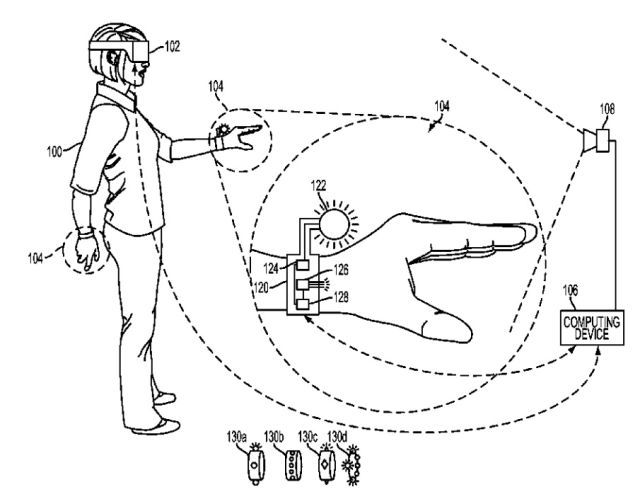
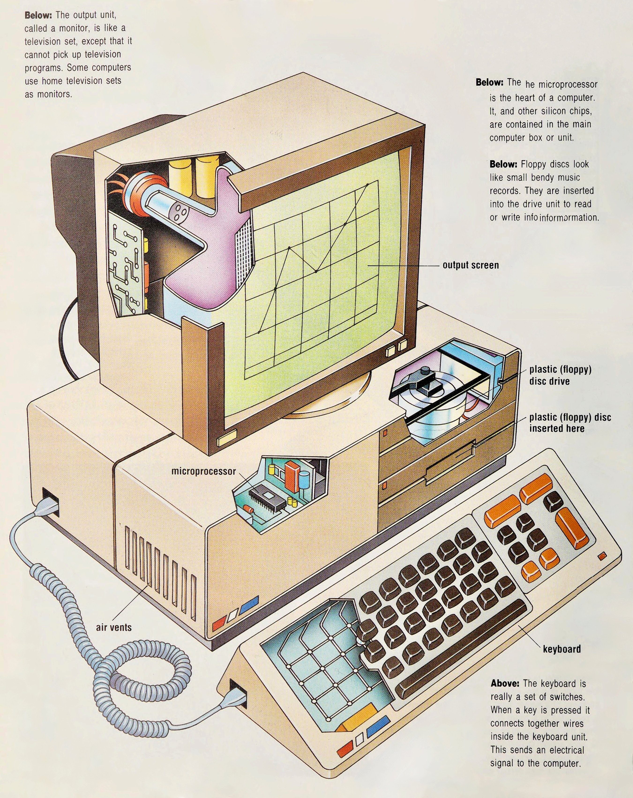
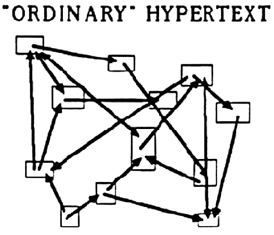
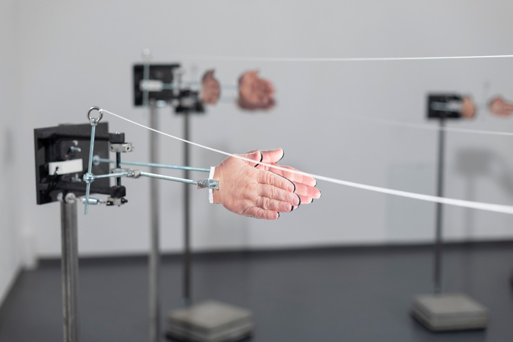
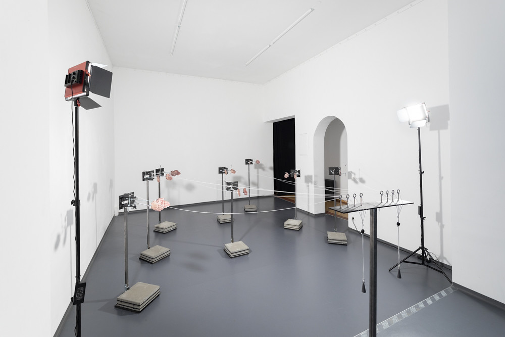

| IDEA/ARTWORK | TEXT/FINDINGS |
|---|---|
| Post Humanism |
` Posthumanism is a philosophical perspective of how change is enacted in the world. A posthumanist perspective assumes agency is distributed through dynamic forces of which the human participates but does not completely intend or control.’ . Posthumanism states that humans are dependent on the environment and are a factor inside of a larger living ecosystem. Much of post-human thinking expands on Donna Haraway’s philosophy, that the fusing of humans and technology will help humans see themselves as being interconnected rather than separate from non-humans. By decentering humans, post-humanism advocates for consideration of other species, removing the human from the center of the ecosystem. I resonate with this thinking as it encourages consideration of not only other species, but also recognition that humans depend on biophysical worlds and interactions within ecosystems. The application of this thinking enables a social implication-based approach, with the basis understanding that anything a human does will have consequences on a wider network. Similarly, anything that happens in a wider network, will have implications on the human. This promotes an interesting intersection and interaction not only between species but also been humans and technology. Keeling, Diane Marie, and Marguerite Nguyen Lehman. "Posthumanism." Oxford Research Encyclopedia of Communication. 26 Apr. 2018; Accessed 4 May. 2025. https://oxfordre.com/communication/view/10.1093/acrefore/9780190228613.001.0001/acrefore-9780190228613-e-627. |
|
`Cybernetics is the scientific study and mathematical modeling of regulation and control in systems, focusing on the flow of information and how it is used by the system to control itself.’ The Cybernetic image library is an open archive of diagrams and graphics representing systems theory, counterculture computing, radical publishing, speculative design, alternative knowledge systems and more. Not only is the imagery radical and imaginative, the visual language speaks to me through powerful iconography, flow chart systems and interesting imagery. The images present a different perspective on not only human computer interaction but also visualizations of how humans and technology are inter-connected. Some of my favorites:    |
|
|
Work by Sun Yuan and Peng Yu, 2016, Kuka industrial robot, stainless teel and rubber, cellulose ether in coloured water, lighting grid with Cognex, visual-recognition sensors and polycarbonate wall with aluminum frame, commissioned for the Guggenheim Museum. It appears as a kinetic art that becomes critical through error, mimicking the real-time movement that contemporary culture demands, and concern over the artificiality of images that mimic reality as if to replace it. It has a unique aesthetic of a digital age, almost playing on internet nostalgia and targeting new media artists. It is easily recognisable to the up and coming generation having grown up in the dawn of the digital age. `They explore our increasingly automated global reality, one in which territories are controlled mechanically and the relationship between people and machines is rapidly changing. The bloodstain-like marks that accumulate around it evoke the violence that results from surveilling and guarding border zones. Such visceral associations call attention to the consequences of authoritarianism guided by certain political agendas that seek to draw more borders between places and cultures and to the increasing use of technology to monitor our environment.’ I find this work visceral and violent as it personifies a robot, encouraging an empathetic view of a non-living being. The use of blood colored liquid furthers this notion, giving a robot the human essence of bleeding. The associations this has for humans, that they are injured further appeals to the human’s sense of empathy. The work questions what the robot can sense, and through encouraging an empathetic lense, further questions if the robot has emotions. Through the application of a glass cage around the robot, human computer interaction is questioned as the human viewes the robot in a confined, zoo like space, trapped in a cycle programed by humans – there is an interesting power dynamic here. |
|
`A bank account continues to automatically pay a Michigan woman’s mortgage for five years after she dies until it is finally empty and her body is discovered. Universities breed with software and data analytics companies between the sheets of enterprise contracts and the offspring is not a university, but a grotesque stand-in. In 2030, the average European’s digital, data-intensive avatar consumes more water than their physical body. We might have used chat-GPT to write this and the mere possibility of that makes this very text a hideous replica. Maybe we’re just phoning it in; Maybe its a concept. Even talking about rampant duplications, fakery, and generative media only comes across as a poor xerox of 1990’s simulation theory. We trrained a large language model on Baurillard and it just sold off his IP for crypto.’ (from the program) Anna Vasof, Moving the Audeince, 2022 - Interactive kinetic scultpure. `Automation symhony, three-fold cacophony. Vasof’s hands clap-clap-clapping, strings pulled by unseen puppeteer. Franco and Griffin’s ventriloquist dummy, jerking to life in low-fi spasms. Luscombe’s shadow puppets, dancing to the rune of cold circuitry.’ I like the way this work automates and mimics human interaction. The work takes a point of human connection (aka when the audience applauds) and automates it, creating an environment where clapping is simulated. The work and exhibition questions how we replicate innately human elements, and the consequences of our ever-increasing digital world on the identity of a human. Interaction between humans and digital spheres, as we realize the way computers clone or view humans and question our identity through analytics and large language models   |
|
| Circuit Bending and Video art - Andrei_Jay |
Andrei Jay is a mathmatician, video artist and educator. He makes videos and tutorials online about utilising hardware and circuit bending to create glitch effects and interesting video art. I like his creative use of technology, and find the visual outputs he creates to be visually appealing. I find circuit bending as a practice to be an interesting metaphor for glitch and creating from breaking. I like to think of this metaphor in terms of creating from destruction, experimenting and process. I like the experimental outcomes it can create and how through experimentation one is able to create something unique. Highlights how building through destruction can manifest into an outcome that is rich and full of life. Notions of circuit bending further my research not only on the glitch, but also on how operating outside of systems and escaping binaries can lead to creation and depiction of the potential of electronic forms. To me, distortion is a symbol for something that has always existed but is underlying, and I belive circuit bending exposes, how, by listneing on tuning into hidden aspects of life, we may uncover something beautiful that has always existed. Andrei's work utilises geometry as well as soundscapes to inform his audio visual works. |